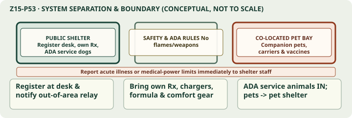

Z15-P53 · Disaster scenarios · New manuscript
Register safely at public emergency shelters and know ADA service-animal rules
Transition smoothly into municipal or Red Cross shelters while respecting shelter safety rules, medical needs, and legal animal distinctions.
When it applies · Evacuees using community warming/cooling centers or overnight disaster shelters.
Equipment · Go-bags, photo IDs (helpful, though shelters do not turn away disaster victims lacking ID), prescriptions, personal hygiene items, and comfort items.

Actions
- Check in through the shelter’s locally designated process and let your out-of-area contact know where you are if safe. Ask staff about accessibility and reunification support.[D14, T10]
- Bring personal medications, hearing/mobility aids, infant formula/diapers, pillow/blanket, phone chargers, and earplugs—remember general public shelters prohibit weapons, alcohol, illegal drugs, and personal cooking flames indoors.[D14, T10]
- Understand the exact legal distinction for animals: ADA-defined trained service animals are legally admitted inside general public emergency shelters with their handler, whereas companion pets typically require designated pet-friendly shelters or co-located animal-shelter bays—verify county pet-shelter sites BEFORE storms hit![D17]
Failure recognition · Refusing mandatory flood evacuation because of assuming no county pet-friendly shelter exists, or arriving without critical prescription medications.[D17, D14]
Verify · Confirm shelter registration completed, out-of-area relay notified, prescriptions carried on-person, and local pet-shelter options mapped beforehand.[D14, D17]
Stop or change course · Acute medical symptoms, contagious vomiting/diarrhea, or depleted oxygen/dialysis supplies inside a general shelter must be reported immediately to the shelter nurse/manager.[T10, D14]
Evidence and editorial notes
- D14 · FEMA / Ready.gov · Evacuation (current web edition)
- Section: Before, during and after evacuation · Conditions: Official evacuation or a preplanned, safely accessible departure
Support: Prepare a go-kit, routes, transport and a contact plan. Follow official routes and use the locally indicated registration or reunification channel.
Limitations: Shelter accessibility and animal accommodations require local and ADA guidance; no fixed national website is assumed. · Conflicting evidence: See A02 claim audit for boundaries.
Editorial note: Core evacuation execution and accountability evidence in Z15. · Specialist reviewer: Emergency management and transportation safety
Primary source · checked 2026-11-24 - D17 · FEMA / Ready.gov · Prepare Your Pets for Disasters (current web edition)
- Section: Pet, Service-Animal, and Vulnerable-Member Accountability · Conditions: Households with pets, service animals, children, older adults, or access/functional needs
Support: Include leashes, carriers, vaccination records, pet food/water, and pet-friendly shelter lists in household evacuation plans—never leave pets chained or trapped behind; coordinate explicit buddy assignments for children, older adults, and mobility/power-dependent household members.
Limitations: General public Red Cross shelters always admit service animals under ADA rules, whereas companion pets often require separate co-located or pet-friendly shelters. · Conflicting evidence: None; complements T10 disability planning.
Editorial note: Ensures complete household and vulnerable-group accountability in Z15. · Specialist reviewer: Accessible emergency management and animal welfare
Primary source · checked 2026-11-24 - T10 · FEMA / Ready.gov · People with Disabilities (current web edition)
- Section: People with Disabilities > Make a Plan and Build a Kit · Conditions: Individuals with mobility, sensory, medical, or power-dependent access and functional needs
Support: Build a personal support network, plan accessible evacuation transport, register voluntarily with local emergency registries where available, and plan backup power and spare supplies for medical devices, medications, and service animals.
Limitations: Local registry availability and utility priority-restoration policies vary by jurisdiction. · Conflicting evidence: None; extends generic preparedness plans to accessible requirements.
Editorial note: Directly addresses Z01 accessible emergency planning requirement. · Specialist reviewer: Accessible emergency management and disability preparedness
Primary source · checked 2026-11-24
Source lineage · FEMA Evacuation and Pets; new manuscript · Classification · New manuscript.